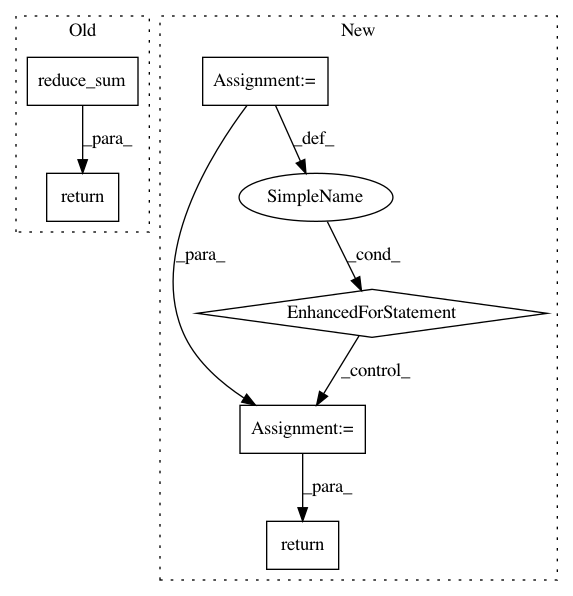

9cea3bb56b123ae718a0c58aa22b73a6b82b6374,src/spn/gpu/TensorFlow.py,,spn_to_tf_graph,#Any#Any#Any#,16
Before Change
return tf.reduce_logsumexp(w_childrenprob, axis=1)
else:
w_childrenprob = tf.stack([node.weights[i] * ctf for i, ctf in enumerate(childrenprob)], axis=1)
return tf.reduce_sum(w_childrenprob, axis=1)
if isinstance(node, Histogram):
inps = np.arange(int(max(node.breaks))).reshape((-1, 1))
After Change
return tf.add_n(childrenprob)
else:
prod_res = None
for c in childrenprob:
if prod_res is None:
prod_res = c
else:
prod_res = tf.multiply(prod_res, c)
return prod_res
if isinstance(node, Sum):
// TODO: make weights as variables
if log_space:
In pattern: SUPERPATTERN
Frequency: 3
Non-data size: 6
Instances
Project Name: SPFlow/SPFlow
Commit Name: 9cea3bb56b123ae718a0c58aa22b73a6b82b6374
Time: 2018-03-31
Author: molina@cs.tu-darmstadt.de
File Name: src/spn/gpu/TensorFlow.py
Class Name:
Method Name: spn_to_tf_graph
Project Name: Kamnitsask/deepmedic
Commit Name: 005c1e97d0bd60d00567904099da5fe4473f55d5
Time: 2020-01-08
Author: konstantinos.kamnitsas12@imperial.ac.uk
File Name: deepmedic/neuralnet/layers.py
Class Name: ConvLayer
Method Name: _get_L1_cost
Project Name: Kamnitsask/deepmedic
Commit Name: 005c1e97d0bd60d00567904099da5fe4473f55d5
Time: 2020-01-08
Author: konstantinos.kamnitsas12@imperial.ac.uk
File Name: deepmedic/neuralnet/layers.py
Class Name: ConvLayer
Method Name: _get_L2_cost